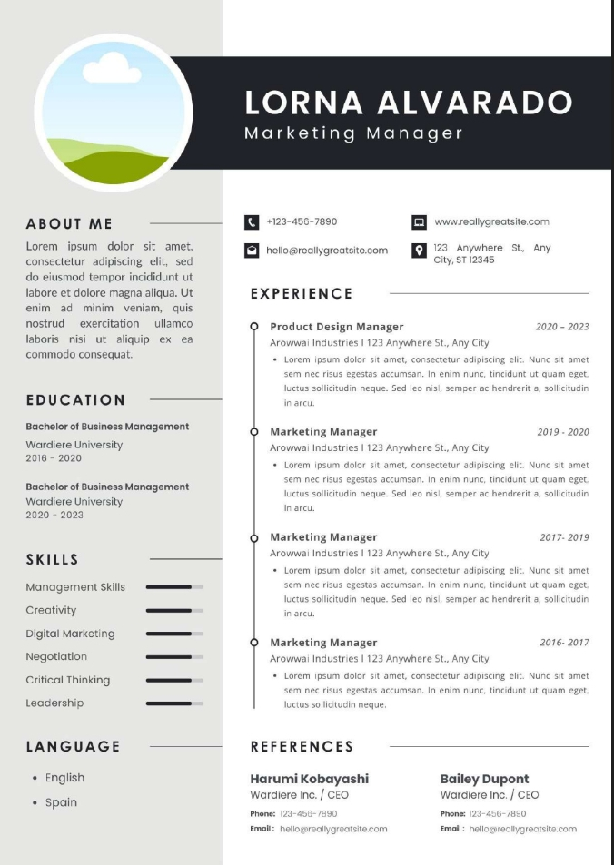

CV ATS ( Applicant Tracking System ) - Harga : Rp 25.000
Udah capek CV kamu ga kebaca sistem HRD? Yuk pake format CV yang simple, rapi, dan udah terbukti ATS-friendly ini. Tinggal edit data kamu, langsung siap kirim lamaran!
50+ CV berhasil dibuat • Revisi sampai puas • Fast response

CV Colorful & Estetik - Harga : Rp 15.000
Mau CV yang beda dari yang lain? Ga cuma polos hitam putih, template CV ini punya desain menarik, warna-warni, tapi tetep rapi dan profesional. Bikin CV kamu lebih standout di mata HRD!